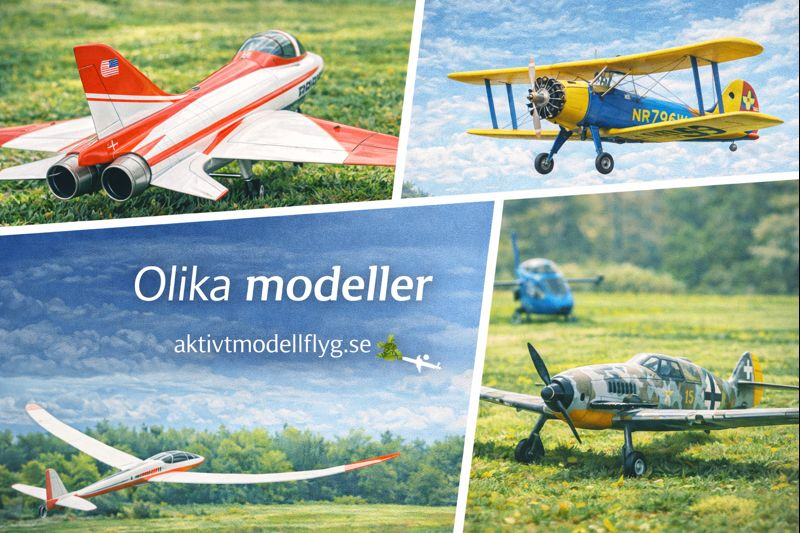

Modellflygets dag
Modellflyg
Detta är modellflyg
Unga
Avancera
Foto Tema & event
Foto Bygg & teknik
Foto Modeller
Börja
Hur man börjar
Radio
Laddare
Flygplan
Butiker
Utbildning
Regler
Prova spaka
Uppbyggnad RC-Plan
Sändarens knappar
Checklista
Byggtips
Länkar
Uppdatera
Intro
Spektrum
Futaba
FrSky med Ethos
EdgeTX, ELRS & MM - RadioMaster
Ladda ned
För klubbar
För piloter
Länkar
« Föregående
Blädda med knapparna
Nästa »

Modeller
Välkommen till galleriet